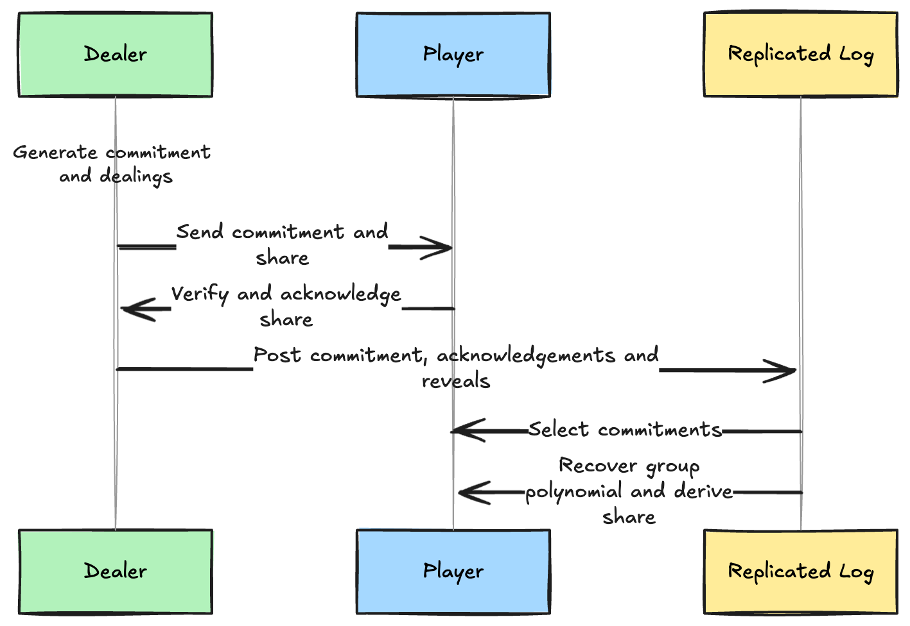

Reconfiguration + Reshare with consensus::threshold_simplex
An ongoing challenge with maintaining distributed validator sets is reconfiguring the validator committee as well as refreshing secret key material amongst active participants. Validator committees are rarely static in practice, and networks need to adapt without touching the brakes.
Validator committee reconfiguration normally entails injecting out-of-band key material generated and maintained by the new validators. examples/reshare shows a different path: drive a continuous BLS12-381 reshare entirely through the replicated log and require validators to rotate key material every epoch.

The example combines consensus::threshold_simplex, cryptography::bls12381::dkg, and p2p::authenticated into a single demonstration that you can run end to end. Because every interaction in the reshare lands in the log, each participant gains an auditable transcript of who proposed what, which shares were acknowledged, and how the next committee was formed.
A refresher on consensus::threshold_simplex and examples/vrf
The consensus::threshold_simplex module utilizes BLS12-381 threshold signatures to enable a group of validators to collectively sign consensus messages. Each active validator has a share of the private key, and a predefined threshold of these shares is required to produce a valid signature for a given message.
examples/vrf showcases a continuous key reshare process to generate randomness, but with a key caveat - participants trust a central "Arbiter" to track commitments, acknowledgements, and reveals.
Epoching
Recently, Brendan Chou added support for height-based epoching in consensus::threshold_simplex. This feature adds an epoch field to each consensus message, enabling an orchestrator to transition to a new epoch when a direct finalization for the last block in an epoch is observed. Epochs give us the perfect platform to perform progressive BLS key reshare as a means of facilitating committee reconfiguration.
This approach was derived from From Permissioned to Proof-of-Stake Consensus by Jovan Komatovic, Andrew Lewis-Pye, Joachim Neu, Tim Roughgarden and Ertem Nusret Tas.
Piggybacking on Consensus
To facilitate safe reconfiguration of the validator committee in a consensus::threshold_simplex engine, cryptography::bls12381::dkg can be employed to securely generate new shares for the next committee.
Each epoch begins with a threshold of validators acting as dealers and players for the next BLS polynomial. Dealers encrypt fresh shares to the upcoming committee (players), players acknowledge receipt, and anyone who misbehaves is deterministically flagged by participants. Those transcripts are bundled into a compact reshare outcome and proposed alongside normal blocks.
Consensus handles the rest. Once the reshare outcomes are included within finalized blocks, every replica learns the same public polynomial, optional local share (if part of the current committee), and participant list for the next epoch.
Driving resharing through the replicated log buys:
- accountability: cryptographic receipts for every dealer's outcome are included in the replicated log.
- availability: the network keeps producing blocks while it prepares the next quorum, so reconfiguration/reshare does not compete with liveness.
- recoverability: because dealer outcomes are persisted, any node can crash, restart, and deterministically rejoin the current epoch without side-channeled communication.
Trying It Locally
You can run the example locally by generating participant configurations and launching the validators with the command emitted by the setup step. Within a few minutes the logs will show share distributions, resumed consensus rounds, and epoch transitions as the network continually rotates the committee with refreshed shares.
$ git clone git@github.com:commonwarexyz/monorepo.git && cd monorepo
$ cargo run --bin commonware-reshare setup
# Execute the `mprocs` command emitted by the previous step
What Comes Next
We expect builders to swap in their own selection rules, plug the reshare transcript into application state, and experiment with rotating keys on cadences that were impractical before. If you take the example in a new direction, or uncover interesting corner cases, let us know. Validator networks should be able to evolve in real time, and this example is an invitation to make that the default.